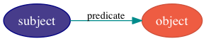

The Knora Base Ontology¶
Introduction¶
Resource Description Framework (RDF)¶
Knora uses a hierarchy of ontologies based on the Resource Description Framework (RDF), RDF Schema (RDFS), and the Web Ontology Language (OWL) Both RDFS and OWL are expressed in RDF. RDF expresses information as a set of statements (called triples). A triple consists of a subject, a predicate, and an object:

The object may be either a literal value (such as a name or number) or another subject. Thus it is possible to create complex graphs that connect many subjects, like this:
![digraph {
rankdir = LR
{
node [color = navy, fillcolor = slateblue4, style = filled, fontcolor = white]
sub1 [label = "subject no. 1"]
sub2 [label = "subject no. 2"]
sub3 [label = "subject no. 3"]
}
{
node [shape = box, color = firebrick]
lit1 [label = "literal no. 1"]
lit2 [label = "literal no. 2"]
lit3 [label = "literal no. 3"]
}
edge [fontsize = 11, color = cyan4]
sub1 -> lit1 [label = "predicate no. 1"]
sub1 -> lit2 [label = "predicate no. 2"]
sub1 -> sub2 [label = "predicate no. 3"]
sub2 -> lit3 [label = "predicate no. 4"]
sub2 -> sub3 [label = "predicate no. 5"]
// Add invisible edges to order the nodes from top to bottom.
{
rank = same
lit1 -> lit2 -> sub2 [style = invis]
rankdir = TB
}
{
rank = same
lit3 -> sub3 [style = invis]
rankdir = TB
}
}](../../_images/graphviz-e5673fda25eab6dd2bdbe76a27939365da468ae5.png)
In RDF, each subject and predicate has a unique, URL-like identifier
called an Internationalized Resource Identifier (IRI). Within a given project,
IRIs typically differ only in their last component (the “local part”), which
is often the fragment following a # character. Such IRIs share a
long “prefix”. In Turtle and similar formats for
writing RDF, a short prefix label can be defined to represent the long
prefix. Then an IRI can be written as a prefix label and a local part,
separated by a colon (:). For example, if the “example” project’s
long prefix is http://www.example.org/rdf#, and it contains subjects
with IRIs like http://www.example.org/rdf#book, we can define the
prefix label ex to represent the prefix label, and write prefixed
names for IRIs:
![digraph {
{
node [color = navy, fillcolor = slateblue4, style = filled, fontcolor = white]
book [label = "ex:book1"]
page [label = "ex:page1"]
}
{
node [shape = box, color = firebrick]
title [label = "‘Das Narrenschiff’"]
author [label = "‘Sebastian Brant’"]
pagename [label = "‘a4r’"]
}
edge [fontsize = 11, color = cyan4]
book -> title [label = "ex:title"]
book -> author [label = "ex:author"]
page -> book [label = "ex:pageOf"]
page -> pagename [label = "ex:pagename"]
}](../../_images/graphviz-4bde7ecf7e6fee0179df808f79a78f44bb350eae.png)
In this document, we use the prefix label kb to represent the Knora base
ontology, [1] but we usually omit it for brevity.
The Knora Data Model¶
The Knora data model is based on the observation that, in the
humanities, a value or literal is often itself structured and can be
highly complex. Moreover, a value may have its own metadata, such as its
creation date, information about ownership, permissions, and so on.
Therefore, the Knora base ontology describes structured value types that
can store this type of metadata. In the diagram below, a book (ex:book2)
has a title (identified by the predicate ex:title) and a publication
date (ex:pubdate), each of which has some metadata.
![digraph {
book [label = "ex:book2", style = filled, fontcolor = white, color = navy, fillcolor = slateblue4]
{
node [style = filled, fontcolor = white, color = tomato3, fillcolor = tomato2]
title [label = "kb:TextValue"]
pubdate [label = "kb:DateValue"]
}
{
node [shape = box, color = firebrick]
titleStr [label = "‘King Lear’"]
titleCreationDate [label = "2015-08-12 13:00"]
startJDC [label = "2364669"]
endJDC [label = "2364669"]
pubdateCreationDate [label = "2015-08-12 13:03"]
}
edge [fontsize = 11, color = cyan4]
book -> title [label = "ex:title"]
book -> pubdate [label = "ex:pubdate"]
title -> titleStr [label = "kb:valueHasString"]
title -> titleCreationDate [label = "kb:valueCreationDate"]
pubdate -> startJDC [label = "kb:valueHasStartJDC"]
pubdate -> endJDC [label = "kb:valueHasEndJDC"]
pubdate -> pubdateCreationDate [label = "kb:valueCreationDate"]
}](../../_images/graphviz-49e0812c35df53b25703e0954f0a778c73a38523.png)
Projects¶
In Knora, each item of data belongs to some particular project. Each
project using Knora must define a kb:knoraProject, which has these
properties (cardinalities are indicated in parentheses after each
property name):
shortname(1)- A short name that can be used to identify the project in configuration files and the like.
basepath(1)- The filesystem path of the directory where the project’s files are stored.
foaf:name(0-1)- The name of the project.
description(0-1)- A description of the project.
belongsTo(0-1)- The
kb:Institutionthat the project belongs to.
Resources and values are associated with a project by means of the
kb:attachedToProject property, as described in
The Knora Data Model. Users are associated with a project by means
of the kb:isInProject property, as described in Users and Groups.
Resources¶
All the content produced by a project (e.g. digitised primary source materials
or research data) must be stored in objects that belong to subclasses of
kb:Resource, so that the Knora API server can query and update that
content. Each project using the Knora base ontology must define its own OWL
classes, derived from kb:Resource, to represent the types of data it deals
with. A subclass of kb:Resource may additionally be a subclass of any
other class, e.g. an industry-standard class such as foaf:Person;
this can facilitate searches across projects.
Resources have properties that point to different parts of the content they
contain. For example, a resource representing a book could have a property
called hasAuthor, pointing to the author of the book. There are two
possible kinds of content in a Knora resource: Knora values
(see Values) or links to other resources (see Links Between Resources).
Properties that point to Knora values must be subproperties of
kb:hasValue, and properties that point to other resources must be
subproperties of kb:hasLinkTo. Either of these two types of properties may
also be a subproperty of any other property, e.g. an industry-standard
property such as foaf:name; this can facilitate searches across projects.
Each property definition must specify the types that its subjects and objects
must belong to (see Constraints on the Types of Property Subjects and Objects for details).
Each project-specific resource class definition must use OWL cardinality restrictions to specify the properties that resources of that class can have (see OWL Cardinalities for details).
Resources are not versioned; only their values are versioned (see Values).
Every resource is required to have an rdfs:label. The object of this
property is an xsd:string, rather than a Knora value; hence it is not
versioned. A user who has modify permission on a resource
Authorization can change its label.
A resource can be marked as deleted; the Knora API server does this by adding
the predicate kb:isDeleted true to the resource. An optional
kb:deleteComment may be added to explain why the resource has been marked
as deleted. Deleted resources are normally hidden. They cannot be undeleted,
because even though resources are not versioned, it is necessary to be able to
find out when a resource was deleted. If desired, a new resource can be
created by copying data from a deleted resource.
Properties of Resource¶
creationDate(1)- The time when the resource was created.
attachedToUser(1)- The user who owns the resource.
attachedToProject(1)- The project that the resource is part of.
lastModificationDate(0-1)- A timestamp indicating when the resource (or one of its values) was last modified.
seqnum(0-1)- The sequence number of the resource, if it is part of an ordered group of resources, such as the pages in a book.
isDeleted(1)- Indicates whether the resource has been deleted.
deleteDate(0-1)- If the resource has been deleted, indicates when it was deleted.
deleteComment(0-1)- If the resource has been deleted, indicates why it was deleted.
Resources can have properties that point to other resources; see Links Between Resources. A resource grants permissions to groups of users; see Authorization.
Representations¶
It is not practical to store all data in RDF. In particular, RDF is not
a good storage medium for binary data such as images. Therefore, Knora
stores such data outside the triplestore, in ordinary files. A resource
can have one or more files attached to it. For each file, there is a
kb:FileValue in the triplestore containing metadata about the file
(see FileValue). A resource that has file values
must belong to of the subclasses of kb:Representation. The base
class Representation, which is not intended to be used directly, has
this property:
hasFileValue(1-n)- Points to one or more file values.
Its subclasses, which are intended to be used directly in data, include:
StillImageRepresentation- A representation containing still image files.
MovingImageRepresentation- A representation containing video files.
AudioRepresentation- A representation containing audio files.
DDDrepresentation- A representation containing 3D images.
TextRepresentation- A representation containing formatted text files, such as XML files.
DocumentRepresentation- A representation containing documents (such as PDF files) that are not text files.
There are two ways for a project to design classes for representations.
The simpler way is to create a resource class that represents a thing in
the world (such as ex:Painting) and also belongs to a subclass of
Representation. This is adequate if the class can have only one type
of file attached to it. For example, if paintings are represented only
by still images, ex:Painting could be a subclass of
StillImageRepresentation. This is the only approach supported in
version 1 of the Knora API.
The more flexible approach, which is allowed by the Knora base ontology
and will be supported by version 2 of the Knora API, is for each
ex:Painting to use the kb:hasRepresentation property to point to
other resources containing files that represent the painting. Each of
these other resources can extend a different subclass of
Representation. For example, a painting could have a
StillImageRepresentation as well as a DDDrepresentation.
Standard Resource Classes¶
In general, each project using Knora must define its own subclasses of
kb:Resource. However, the Knora base ontology provides some standard
subclasses of kb:Resource, which are intended to be used by any
project:
Region- Represents a region of a
Representation(see Representations). Annotation- Represents an annotation of a resource. The
hasCommentproperty points to the text of the annotation. LinkObj- Represents a link that connects two or more resources. A
LinkObjhas ahasLinkToproperty pointing to each resource that it connects, as well as ahasLinkToValueproperty pointing to a reification of each of these direct links (see Links Between Resources). ALinkObjis more complex (and hence less convenient and readable) than a simple direct link, but it has the advantage that it can be annotated using anAnnotation. For improved readability, a project can make its own subclasses ofLinkObjwith specific meanings.
Values¶
The Knora base ontology defines a set of OWL classes that are derived
from kb:Value and represent different types of structured values
found in humanities data. This set of classes may not be extended by
project-specific ontologies.
A value is always part of one particular resource, which points to it
using some property derived from hasValue. For example, a
project-specific ontology could specify a Book class with a property
hasSummary (derived from hasValue), and that property could have
a knora-base:objectClassConstraint of TextValue. This would mean
that the summary of each book is represented as a TextValue.
Knora values are versioned. Existing values are not modified. Instead, a
new version of an existing value is created. The new version is linked
to the old version via the previousValue property.
“Deleting” a value means marking it with kb:isDeleted. An optional
kb:deleteComment may be added to explain why the value has been
marked as deleted. Deleted values are normally hidden.
Most types of values are marked as deleted without creating a new
version of the value. However, link values must be treated as a special
case. Before a LinkValue can be marked as deleted, its reference
count must be decremented to 0. Therefore, a new version of the
LinkValue is made, with a reference count of 0, and it is this new
version that is marked as deleted.
To simplify the enforcement of ontology constraints, and for consistency with resource updates, no new versions of a deleted value can be made; it is not possible to undelete. Instead, if desired, a new value can be created by copying data from a deleted value.
Properties of Value¶
valueCreationDate(1)- The date and time when the value was created.
attachedToUser(1)- The user who owns the value.
attachedToProject(0-1)- The project that the value is part of. If not specified, defaults to the project of the containing resource.
valueHasString(1)- A human-readable string representation of the value’s contents, which is available to Knora’s full-text search index.
valueHasOrder(0-1)- A resource may have several properties of the same type with
different values (which will be of the same class), and it may be
necessary to indicate an order in which these values occur. For
example, a book may have several authors which should appear in a
defined order. Hence,
valueHasOrder, when present, points to an integer literal indicating the order of a given value relative to the other values of the same property. These integers will not necessarily start at any particular number, and will not necessarily be consecutive. previousValue(0-1)- The previous version of the value.
isDeleted(1)- Indicates whether the value has been deleted.
deleteDate(0-1)- If the value has been deleted, indicates when it was deleted.
deleteComment(0-1)- If the value has been deleted, indicates why it was deleted.
Each Knora value can grant permissions (see Authorization).
Subclasses of Value¶
TextValue¶
Represents text, possibly including markup. The text is the object of
the valueHasString property. A line break is represented as a
Unicode line feed character (U+000A). The non-printing Unicode
character INFORMATION SEPARATOR TWO (U+001E) can be used to separate
words that are separated only by standoff markup (see below), so they
are recognised as separate in a full-text search index.
Markup is stored using this property:
valueHasStandoff(0-n)- Points to a standoff markup tag. See Text with Standoff Markup.
DateValue¶
Humanities data includes many different types of dates. In Knora, a date
has a specified calendar, and is always represented as a period with
start and end points (which may be equal), each of which has a precision
(DAY, MONTH, or YEAR). Internally, the start and end points
are stored as two Julian Day Numbers. This calendar-independent
representation makes it possible to compare and search for dates
regardless of the calendar in which they were entered. Properties:
valueHasCalendar(1)- The name of the calendar in which the date should be displayed.
Currently
GREGORIANandJULIANare supported. valueHasStartJDC(1)- The Julian Day Number of the start of the period (an
xsd:integer). valueHasStartPrecision(1)- The precision of the start of the period.
valueHasEndJDC(1)- The Julian Day Number of the end of the period (an
xsd:integer). valueHasEndPrecision(1)- The precision of the end of the period.
DecimalValue¶
Represents an arbitrary-precision decimal number. Property:
valueHasDecimal(1)- An
xsd:decimal.
GeomValue¶
Represents a geometrical object as a JSON string, using normalized coordinates. Property:
valueHasGeometry(1)- A JSON string.
GeonameValue¶
Represents a geolocation, using the numerical codes found at GeoNames. Property:
valueHasGeonameCode(1)- the numerical code of a geographical feature from
GeoNames, represented as an
xsd:integer.
IntervalValue¶
Represents a time interval, with precise start and end times on a timeline, e.g. relative to the beginning of an audio or video file. Properties:
valueHasIntervalStart(1)- An
xsd:decimalrepresenting the start of the interval in seconds. valueHasIntervalEnd(1)- An
xsd:decimalrepresenting the end of the interval in seconds.
ListValue¶
Projects often need to define lists or hierarchies of categories that
can be assigned to many different resources. Then, for example, a user
interface can provide a drop-down menu to allow the user to assign a
category to a resource. The ListValue class provides a way to
represent these sorts of data structures. It can represent either a flat
list or a tree.
A ListValue has this property:
valueHasListNode(1)- Points to the root
ListNodeof the list or tree.
Each ListNode can have the following properties:
hasSubListNode(0-n)- Points to the node’s child nodes, if any.
listNodePosition(1)- An integer indicating the node’s position in the list of its siblings.
isRootNode(0-1)- Set to
trueif this is the root node. listNodeName(0-n)- The node’s human-readable name.
FileValue¶
Knora stores certain kinds of data outside the triplestore, in files
(see Representations). Each digital object that is
stored outside the triplestore has associated metadata, which is stored
in the triplestore in a kb:FileValue. The base class FileValue,
which is not intended to be used directly, has these properties:
internalFilename(1)- The name of the file as stored by the Knora API server.
internalMimeType(1)- The MIME type of the file as stored by the Knora API server.
originalFilename(0-1)- The original name of the file when it was uploaded to the Knora API server.
originalMimeType(0-1)- The original MIME type of the file when it was uploaded to the Knora API server.
isPreview(0-1)- A boolean indicating whether the file is a preview, i.e. a small
image representing the contents of the file. A preview is always a
StillImageFileValue, regardless of the type of the enclosingRepresentation.
The subclasses of FileValue, which are intended to be used directly
in data, include:
StillImageFileValue- Contains metadata about a still image file.
MovingImageFileValue- Contains metadata about a video file.
AudioFileValue- Contains metadata about an audio file.
DDDFileValue- Contains metadata about a 3D image file.
TextFileValue- Contains metadata about a text file.
DocumentFileValue- Contains metadata about a document (such as PDF) that is not a text file.
Each of these classes contains properties that are specific to the type of file it describes. For example, still image files have dimensions, video files have frame rates, and so on.
The files in a given representation must be semantically equivalent,
meaning that coordinates that relate to one file must also be valid for
other files in the same representation. Coordinates in Knora are
expressed as fractions of the size of the object on some dimension; for
example, image coordinates are expressed as fractions of its width and
height, rather than in pixels. Therefore, the image files in a
StillImageRepresentation must have the same aspect ratio, but they
need not have the same dimensions in pixels. Similarly, the audio and
video files in an AudioRepresentation or
MovingImageRepresentation must have the same length in seconds, but
may have different bitrates.
FileValue objects are versioned like other values, and the actual
files stored by Knora are also versioned. Version 1 of the Knora API
does not provide a way to retrieve a previous version of a file, but
this feature will be added in a subsequent version of the API.
LinkValue¶
A LinkValue is an RDF “reification” containing metadata about a link
between two resources. It is therefore a subclass of rdf:Statement
as well as of Value. It has these properties:
rdf:subject(1)- The resource that is the source of the link.
rdf:predicate(1)- The link property.
rdf:object(1)- The resource that is the target of the link.
valueHasRefCount(1)- The reference count of the link. This is meaningful when the
LinkValuedescribes resource references in Standoff text markup (see StandoffLinkTag). Otherwise, the reference count will always be 1 (if the link exists) or 0 (if it has been deleted).
For details about how links are created in Knora, see Links Between Resources.
ExternalResValue¶
Represents a resource that is not stored in the RDF triplestore managed
by the Knora API server, but instead resides in an external repository
managed by some other software. The ExternalResValue contains the
information that the Knora API server needs in order to access the
resource, assuming that a suitable gateway plugin is installed.
extResAccessInfo(1)- The location of the repository containing the external resource (e.g. its URL).
extResId(1)- The repository-specific ID of the external resource.
extResProvider(1)- The name of the external provider of the resource.
Links Between Resources¶
A link between two resources is expressed, first of all, as a triple, in
which the subject is the resource that is the source of the link, the
predicate is a “link property” (a subproperty of kb:hasLinkTo), and
the object is the resource that is the target of the link.
It is also useful to store metadata about links. For example, Knora
needs to know who owns the link, who has permission to modify it, when
it was created, and so on. Such metadata cannot simply describe the link
property, because then it would refer to that property in general, not
to any particular instance in which that property is used to connect two
particular resources. To attach metadata to a specific link in RDF, it
is necessary to create an RDF “reification”. A reification makes
statements about a particular triple (subject, predicate, object), in
this case the triple that expresses the link between the resources.
Knora uses reifications of type kb:LinkValue (described in
LinkValue) to store metadata about links.
For example, suppose a project describes paintings that belong to collections. The project can define an ontology as follows (expressed here in Turtle format, and simplified for the purposes of illustration):
@prefix kb <http://www.knora.org/ontology/knora-base#> .
@prefix : <http://www.knora.org/ontology/paintings#> .
:Painting rdf:type owl:Class ;
rdfs:subClassOf kb:Resource ,
[ rdf:type owl:Restriction ;
owl:onProperty :hasArtist ;
owl:cardinality 1 ] ,
[ rdf:type owl:Restriction ;
owl:onProperty :hasTitle ;
owl:cardinality 1 ] ;
[ rdf:type owl:Restriction ;
owl:onProperty :isInCollection ;
owl:minCardinality 1 ] ;
[ rdf:type owl:Restriction ;
owl:onProperty :isInCollectionValue ;
owl:minCardinality 1 ] .
:Collection rdf:type owl:Class ;
rdfs:subClassOf kb:Resource ,
[ rdf:type owl:Restriction ;
owl:onProperty :hasCollectionName ;
owl:cardinality 1 ] .
:hasArtist rdf:type owl:ObjectProperty ;
rdfs:label "Name of artist" ;
kb:subjectClassConstraint :Painting ;
kb:objectClassConstraint kb:TextValue .
:hasTitle rdf:type owl:ObjectProperty ;
rdfs:label "Title of painting"
kb:subjectClassConstraint :Painting ;
kb:objectClassConstraint kb:TextValue .
:hasCollectionName rdf:type owl:ObjectProperty ;
rdfs:label "Name of collection" ;
kb:subjectClassConstraint :Collection ;
kb:objectClassConstraint kb:TextValue .
To link the paintings to the collection, we must add a “link property”
to the ontology. In this case, the link property will point from a
painting to the collection it belongs to. Every link property must be a
subproperty of hasLinkTo.
:isInCollection rdf:type owl:ObjectProperty ;
rdfs:subPropertyOf kb:hasLinkTo ;
kb:subjectClassConstraint :Painting ;
kb:objectClassConstraint :Collection .
We must then add a “link value property”, which will point from a
painting to a LinkValue (described in
LinkValue), which will contain metadata about the
link between the property and the collection. In particular, the link
value specifies the owner of the link, the date when it was created, and
the permissions that determine who can view or modify it. The name of
the link value property is constructed using a simple naming convention:
the word Value is appended to the name of the link property. In this
case, since our link property is called isInCollectionValue, the
link value property must be called ex:isOnPageValue. Every link
value property must be a subproperty of kb:hasLinkToValue.
:isInCollectionValue rdf:type owl:ObjectProperty ;
rdfs:subPropertyOf kb:hasLinkToValue ;
kb:subjectClassConstraint :Painting ;
kb:objectClassConstraint kb:LinkValue .
Given this ontology, we can create some RDF data describing a painting and a collection:
@prefix paintings <http://www.knora.org/ontology/paintings#> .
@prefix data <http://www.knora.org/ontology/paintings/data#> .
data:dali_4587 rdf:type paintings:Painting ;
paintings:hasTitle data:value_A ;
paintings:hasArtist data:value_B .
data:value_A rdf:type kb:TextValue ;
kb:valueHasString "The Persistence of Memory" .
data:value_B rdf:type kb:TextValue ;
kb:valueHasString "Salvador Dali" .
data:pompidou rdf:type paintings:Collection ;
paintings:hasCollectionName data:value_C .
data:value_C rdf:type kb:TextValue ;
kb:valueHasString "Centre Pompidou, Paris" .
We can then state that the painting is in the collection:
data:dali_4587 paintings:isInCollection data:pompidou ;
paintings:isinCollectionValue data:value_D .
data:value_D rdf:type kb:LinkValue ;
rdf:subject data:dali_4587 ;
rdf:predicate paintings:isInCollection ;
rdf:object data:pompidou ;
kb:valueHasRefCount 1 .
This creates a link (isInCollection) between the painting and the
collection, along with a reification containing metadata about the link.
We can visualise the result as the following graph:
![digraph {
{
// Resources
node [style = filled, fontcolor = white, color = navy, fillcolor = slateblue4]
work [label = "dali_4587"]
collection [label = "pompidou"]
}
{
// Values
node [style = filled, fontcolor = white, color = tomato3, fillcolor = tomato2]
title [label = "value_A"]
artistName [label = "value_B"]
collectionName [label = "value_C"]
linkValue [label = "value_D"]
}
{
// Literals
node [shape = box, color = firebrick]
titleStr [label = "‘The Persistence of Memory’"]
artistNameStr [label = "‘Salvador Dali’"]
isInCollection [label = "isInCollection"]
refCount [label = "1"]
collectionNameStr [label = "‘Centre Pompidou’"]
}
edge [fontsize = 11, color = cyan4]
work -> title [label = "hasTitle"]
work -> artistName [label = "hasArtist"]
work -> collection [label = "isInCollection"]
work -> linkValue [label = "isInCollectionValue"]
collection -> collectionName [label = "hasCollectionName"]
title -> titleStr [label = "valueHasString"]
artistName -> artistNameStr [label = "valueHasString"]
collectionName -> collectionNameStr [label = "valueHasString"]
linkValue -> refCount [label = "valueHasRefCount"]
linkValue -> work [label = "subject"]
linkValue -> isInCollection [label = "predicate"]
linkValue -> collection [label = "object"]
}](../../_images/graphviz-8b1df8db4b614a37438e0c31f4204c2749a8a28a.png)
Text with Standoff Markup¶
Knora is designed to be able to store text with markup, which can indicate formatting and structure, as well as the complex observations involved in transcribing handwritten manuscripts. One popular way of representing text in the humanities is to encode it in XML using the Text Encoding Initiative (TEI) guidelines. [2] In Knora, a TEI/XML document can be stored as a file with attached metadata, but this is not recommended, because it does not allow Knora to perform searches across multiple documents.
The recommended way to store text with markup in Knora is to use Knora’s built-in support for “standoff” markup, which is stored separately from the text. This has some advantages over embedded markup such as XML. [3] While XML requires markup to have a hierarchical structure, and does not allow overlapping tags, standoff nodes do not have these limitations (Schmidt2016). A standoff tag can be attached to any substring in the text by giving its start and end positions. [4] For example, suppose we have the following text:
This sentence has overlapping visual attributes.
This would require just two standoff tags: (italic, start=5, end=29)
and (bold, start=14, end=36).
Moreover, standoff makes it possible to mark up the same text in different, possibly incompatible ways, allowing for different interpretations without making redundant copies of the text. In the Knora base ontology, any text value can have standoff tags.
By representing standoff as RDF triples, Knora makes markup searchable across multiple text documents in a repository. For example, if a repository contains documents in which references to persons are indicated in standoff, it is straightforward to find all the documents mentioning a particular person. Knora’s standoff support is intended to make it possible to convert documents with embedded, hierarchical markup, such as TEI/XML, into RDF standoff and back again, with no data loss, thus bringing the benefits of RDF to existing TEI-encoded documents.
In the Knora base ontology, a TextValue can have one or more
standoff tags. Each standoff tag indicates the start and end positions
of a substring in the text that has a particular attribute. The OWL
class kb:StandoffTag, which is the base class of all standoff node
classes, has these properties:
standoffTagHasStart(1)- The index of the first character in the text that has the attribute.
standoffTagHasEnd(1)- The index of the last character in the text that has the attribute, plus 1.
The StandoffTag class is not used directly in RDF data; instead, its
subclasses are used. A few subclasses are currently provided, and more
will be added to support TEI semantics. In a future version of the Knora
API server, a project will be able to define its own custom standoff tag
classes.
Subclasses of StandoffTag¶
StandoffVisualTag¶
Represents a typographical style. Subclasses:
StandoffItalicTagStandoffBoldTagStandoffUnderlineTagStandoffStrikethroughTagStandoffSuperscriptTagStandoffSubscriptTag
StandoffStructuralTag¶
Represents an element of the structure of a text. Subclasses:
StandoffParagraphTagStandoffHeader1TagStandoffHeader2TagStandoffHeader3TagStandoffHeader4TagStandoffHeader5TagStandoffHeader6TagStandoffOrderedListTagStandoffUnorderedListTagStandoffListElementTag
StandoffDataTypeTag¶
Associates data in some Knora value type with a substring in a text. Subclasses:
StandoffUriTagIndicates that a substring is associated with a URI.StandoffDateValueTagIndicates that a substring represents a date, which is stored in the same form that is used forkb:DateValue.
StandoffLinkTag¶
A StandoffLinkTag Indicates that a substring is associated with a
Knora resource. For example, if a repository contains resources
representing persons, a text could be marked up so that each time a
person’s name is mentioned, a StandoffLinkTag connects the name to
the Knora resource describing that person. Property:
- standoffTagHasLink (1)
- The IRI of the resource that is referred to.
One of the design goals of the Knora ontology is to make it easy and
efficient to find out which resources contain references to a given
resource. Direct links are easier and more efficient to query than
indirect links. Therefore, when a text value contains a resource
reference in its standoff nodes, the Knora API server automatically
creates a direct link between the containing resource and the target
resource, along with an RDF reification (a kb:LinkValue) describing
the link, as discussed in Section [sec:links]. In this case, the link
property is always kb:hasStandoffLinkTo, and the link value property
(which points to the LinkValue) is always
kb:hasStandoffLinkToValue.
The Knora API server automatically updates direct links and reifications
for standoff resource references when text values are updated. To do
this, it keeps track of the number of text values in each resource that
contain at least one standoff reference to a given target resource. It
stores this number as the reference count of the LinkValue (see
LinkValue) describing the direct link. Each time
this number changes, it makes a new version of the LinkValue, with
an updated reference count. When the reference count reaches zero, it
removes the direct link and makes a new version of the LinkValue,
marked with kb:isDeleted.
For example, if data:R1 is a resource with a text value in which the
resource data:R2 is referenced, the repository could contain the
following triples:
data:R1 ex:hasComment data:V1 .
data:V1 rdf:type kb:TextValue ;
kb:valueHasString "This link is internal." ;
kb:valueHasStandoff data:SO1 .
data:SO1 rdf:type kb:StandoffLinkTag ;
kb:standoffTagHasStart: 5 ;
kb:standoffTagHasEnd: 9 ;
kb:standoffTagHasLink data:R2 .
data:R1 kb:hasStandoffLinkTo data:R2 .
data:R1 kb:hasStandoffLinkToValue data:LV1 .
data:LV1 rdf:type kb:LinkValue ;
rdf:subject data:R1 ;
rdf:predicate kb:hasStandoffLinkTo ;
rdf:object data:R2 ;
kb:valueHasRefCount 1 .
The result can be visualized like this:
![digraph {
{
// Resources
node [style = filled, fontcolor = white, color = navy, fillcolor = slateblue4]
r1 [label = "R1"]
r2 [label = "R2"]
}
{
// Values
node [style = filled, fontcolor = white, color = tomato3, fillcolor = tomato2]
v1 [label = "V1"]
lv1 [label = "LV1"]
}
// Standoff tag
so1 [label = "SO1", style = filled, fontcolor = white, color = darkgreen, fillcolor = forestgreen]
{
// Literals
node [shape = box, color = firebrick]
v1Str [label = "‘This link is internal.’"]
tagStart [label = "5"]
tagEnd [label = "9"]
hasStandoffLinkTo [label = "hasStandoffLinkTo"]
refCount [label = "1"]
}
edge [fontsize = 11, color = cyan4]
r1 -> r2 [label = "hasStandoffLinkTo"]
r1 -> v1 [label = "hasComment"]
r1 -> lv1 [label = "hasStandoffLinkToValue"]
v1 -> v1Str [label = "valueHasString"]
v1 -> so1 [label = "valueHasStandoff"]
so1 -> tagStart [label = "standoffTagHasStart"]
so1 -> tagEnd [label = "standoffTagHasEnd"]
so1 -> r2 [label = "standoffTagHasLink"]
lv1 -> r1 [label = "subject"]
lv1 -> hasStandoffLinkTo [label = "predicate"]
lv1 -> r2 [label = "object"]
lv1 -> refCount [label = "valueHasrefCount"]
// Add an invisible edge to order tagStart and tagEnd from left to right.
{
rank = same
tagStart -> tagEnd [style = invis]
rankdir = LR
}
}](../../_images/graphviz-c99eebfa3df0f1a0912eb663f2da22af995e630f.png)
Link values created automatically for resource references in standoff
are automatically visible to all users, as long as they have permission
to see the source and target resources. The owner of these link values
is always kb:SystemUser (see Users and Groups).
Standoff in Digital Editions¶
Knora’s standoff is designed to make it possible to convert XML documents to standoff and back. One application for this feature is an editing workflow in which an editor works in an XML editor, and the resulting XML documents are converted to standoff and stored in Knora, where they can be searched and annotated.
If an editor wants to correct text that has been imported from XML into standoff, the text can be exported as XML, edited, and imported again. To preserve annotations on standoff tags across edits, each tag can automatically be given a UUID. In a future version of the Knora base ontology, it will be possible to create annotations that point to UUIDs rather than to IRIs. When a text is exported to XML, the UUIDs can be included in the XML. When the edited XML is imported again, it can be converted to new standoff tags with the same UUIDs. Annotations that applied to standoff tags in the previous version of the text will therefore also apply to equivalent tags in the new version.
When text is converted from XML into standoff, tags are also given indexes, which are numbered from 0 within the context of a particular text. This makes it possible to order tags that share the same position, and to preserve the hierarchy of the original XML document. An ordinary, hierarchical XML tag is converted to a standoff tag that has one index, as well as the index of its parent tag, if any. The Knora base ontology also supports non-hierarchical markup such as CLIX, which enables overlapping markup to be represented in XML. When non-hierarchical markup is converted to standoff, both the start position and the end position of the standoff tag have indexes and parent indexes.
To support these features, a standoff tag can have these additional properties:
standoffTagHasStartIndex(0-1)- The index of the start position.
standoffTagHasEndIndex(0-1)- The index of the end position, if this is a non-hierarchical tag.
standoffTagHasStartParentIndex(0-1)- The index of the tag, if any, that contains the start position.
standoffTagHasEndParentIndex(0-1)- The index of the tag, if any, that contains the end position, if this is a non-hierarchical tag.
standoffTagHasUUID(0-1)- A UUID that can be used to annotate a standoff tag that may be present in different versions of a text, or in different layers of a text (such as a diplomatic transcription and an edited critical text).
Authorization¶
Users and Groups¶
Each Knora user is represented by an object belonging to the class
kb:User, which is a subclass of foaf:Person, and has the
following properties:
userid(1)- A unique identifier that the user must provide when logging in.
password(1)- A cryptographic hash of the user’s password.
email(0-n)- Email addresses belonging to the user.
isInProject(0-n)- Projects that the user is a member of.
isInGroup(0-n)- Project-specific groups that the user is a member of.
foaf:familyName(1)- The user’s family name.
foaf:givenName(1)- The user’s given name.
Knora’s concept of access control is that an object (a resource or value) can grant permissions to groups of users (but not to individual users). There are four built-in groups:
UnknownUser- Any user who has not logged into the Knora API server is automatically assigned to this group.
KnownUser- Any user who has logged into the Knora API server is automatically assigned to this group.
ProjectMember- When checking a user’s permissions on an object, the user is automatically assigned to this group if she is a member of the project that the object belongs to.
Owner- When checking a user’s permissions on an object, the user is automatically assigned to this group if he is the owner of the object.
A project-specific ontology can define additional groups, which must
belong to the OWL class kb:UserGroup.
There is one built-in SystemUser, which is the owner of link values
created automatically for resource references in standoff markup (see
StandoffLinkTag).
Permissions¶
The owner of an object is always allowed to perform any operation on it.
An object can grant the following permissions, which are stored in a
compact format in a single string, which is the object of the predicate
kb:hasPermissions:
- Restricted view permission (RV) Allows a restricted view of the object, e.g. a view of an image with a watermark.
- View permission (V) Allows an unrestricted view of the object. Having view permission on a resource only affects the user’s ability to view information about the resource other than its values. To view a value, she must have view permission on the value itself.
- Modify permission (M) For values, this permission allows a new version of a value to be created. For resources, this allows the user to create a new value (as opposed to a new version of an existing value), or to change information about the resource other than its values. When he wants to make a new version of a value, his permissions on the containing resource are not relevant. However, when he wants to change the target of a link, the old link must be deleted and a new one created, so he needs modify permission on the resource.
- Delete permission (D) Allows the item to be marked as deleted.
- Change rights permission (CR) Allows the permissions granted by the object to be changed.
Each permission in the above list implies all lower-numbered permissions. A user’s permission level on a particular object is calculated in the following way:
- Make a list of the groups that the user belongs to, including
Ownerand/orProjectMemberif applicable. - If the user is the owner of the object, give her the highest level of permissions.
- Otherwise, make a list of the permissions that she can obtain on the object, by iterating over the permissions that the object grants. For each permission, if she is in the specified group, add the specified permission to the list of permissions she can obtain.
- From the resulting list, select the highest-level permission.
- If the result is that she would have no permissions, give her
whatever permission
UnknownUserwould have.
To view a link between resources, a user needs permission to view the
source and target resources. He also needs permission to view the
LinkValue representing the link, unless the link property is
hasStandoffLinkTo (see StandoffLinkTag).
The format of the object of kb:hasPermissions is as follows:
- Each permission is represented by the one-letter or two-letter abbreviation given above.
- Each permission abbreviation is followed by a space, then a comma-separated list of groups that the permission is granted to.
- The IRIs of built-in groups are shortened using the
knora-baseprefix. - Multiple permissions are separated by a vertical bar (
|).
For example, if an object grants view permission to unknown and known users, and modify permission to project members, the resulting permission literal would be:
V knora-base:UnknownUser,knora-base:KnownUser|M knora-base:ProjectMember
Consistency Checking¶
Knora tries to enforce repository consistency by checking constraints that are specified in the Knora base ontology and in project-specific ontologies. Three types of consistency rules are enforced:
- Cardinalities in OWL class definitions must be satisfied.
- Constraints on the types of the subjects and objects of OWL object properties must be satisfied.
- A datatype property may not have an empty string as an object.
The implementation of consistency checking is partly triplestore-dependent; Knora may be able to provide stricter checks with some triplestores than with others.
OWL Cardinalities¶
As noted in Resources, each subclass of Resource
must use OWL cardinality restrictions to specify the properties it can
have. More specifically, a resource is allowed to have a property that
is a subproperty of kb:hasValue or kb:hasLinkTo only if the
resource’s class has some cardinality for that property. Similarly, a
value is allowed to have a subproperty of kb:valueHas only if the
value’s class has some cardinality for that property.
Knora supports, and attempts to enforce, the following cardinality constraints:
owl:cardinality 1- A resource of this class must have exactly one instance of the specified property.
owl:minCardinality 1- A resource of this class must have at least one instance of the specified property.
owl:maxCardinality 1- A resource of this class may have zero or one instance of the specified property.
owl:minCardinality 0- A resource of this class may have zero or more instances of the specified property.
Knora requires cardinalities to be defined using blank nodes, as in the
following example from knora-base:
:Representation rdf:type owl:Class ;
rdfs:subClassOf :Resource ,
[ rdf:type owl:Restriction ;
owl:onProperty :hasFileValue ;
owl:minCardinality "1"^^xsd:nonNegativeInteger ] .
:StillImageRepresentation rdf:type owl:Class ;
rdfs:subClassOf :Representation ,
[ rdf:type owl:Restriction ;
owl:onProperty :hasStillImageFileValue ;
owl:minCardinality "1"^^xsd:nonNegativeInteger ] .
A resource class inherits cardinalities from its superclasses. Also,
cardinalities in the subclass can override cardinalities that would
otherwise be inherited from the superclass. Specifically, if a
superclass has a cardinality on a property P, and a subclass has a
cardinality on a subproperty of P, the subclass’s cardinality overrides
the superclass’s cardinality. In the example above,
hasStillImageFileValue is a subproperty of hasFileValue.
Therefore, the cardinality on hasStillImageFileValue overrides (i.e.
replaces) the one on hasFileValue.
For more information about OWL cardinalities, see the OWL 2 Primer.
Constraints on the Types of Property Subjects and Objects¶
When a project-specific ontology defines a property, it must indicate the types that are allowed as subjects and objects of the property. This is done using the following Knora-specific properties:
subjectClassConstraint- Specifies the class that subjects of the property must belong to. This constraint is recommended but not required. Knora will attempt to enforce this constraint.
objectClassConstraint- If the property is an object property, specifies the class that
objects of the property must belong to. Every subproperty of
kb:hasValueor akb:hasLinkTo(i.e. every property of a resource that points to akb:Valueor to another resource) is required have this constraint, because the Knora API server relies on it to know what type of object to expect for the property. Knora will attempt to enforce this constraint. objectDatatypeConstraint- If the property is a datatype property, specifies the type of literals that can be objects of the property. Knora will not attempt to enforce this constraint, but it is useful for documentation purposes.
Consistency Constraint Example¶
A project-specific ontology could define consistency constraints as in this simplified example:
:book rdf:type owl:Class ;
rdfs:subClassOf knora-base:Resource ,
[ rdf:type owl:Restriction ;
owl:onProperty :hasTitle ;
owl:cardinality "1"^^xsd:nonNegativeInteger ] ,
[ rdf:type owl:Restriction ;
owl:onProperty :hasAuthor ;
owl:minCardinality "0"^^xsd:nonNegativeInteger ] .
:hasTitle rdf:type owl:ObjectProperty ;
knora-base:subjectClassConstraint :book ;
knora-base:objectClassConstraint knora-base:TextValue .
:hasAuthor rdf:type owl:ObjectProperty ;
knora-base:subjectClassConstraint :book ;
knora-base:objectClassConstraint knora-base:TextValue .
Open Questions¶
Extending Existing Resource Definitions¶
How should extensions of existing resources be handled? Project B extends a resource defined in the project A ontology, by adding new properties/values which are interesting for project B.
Notes¶
| [1] | http://www.knora.org/ontology/knora-base# |
| [2] | TEI refers both to an organization and an XML-based markup language (or more precisely: a set of grammar modules – XML schemas – that can be combined to define a markup language). For reasons of clarity, we use the term TEI/XML to refer to the markup language. |
| [3] | It is also possible to encode standoff markup using XML. For example, the TEI guidelines discuss standoff markup. However, standoff markup is not widely applied in the TEI community. TEI’s main focus is on encoding a hierarchy of elements. |
| [4] | Unlike in corpus linguistics, we do not use any tokenization resulting in a form of predefined segmentation that would limit the user’s possibility to freely annotate any ranges in the text. |
References¶
| [Schmidt2016] | Schmidt, Desmond. 2016. “Using Standoff Properties for Marking-up Historical Documents in the Humanities.” It – Information Technology 58: 1. http://ecdosis.net/papers/schmidt.d.2016.pdf. |